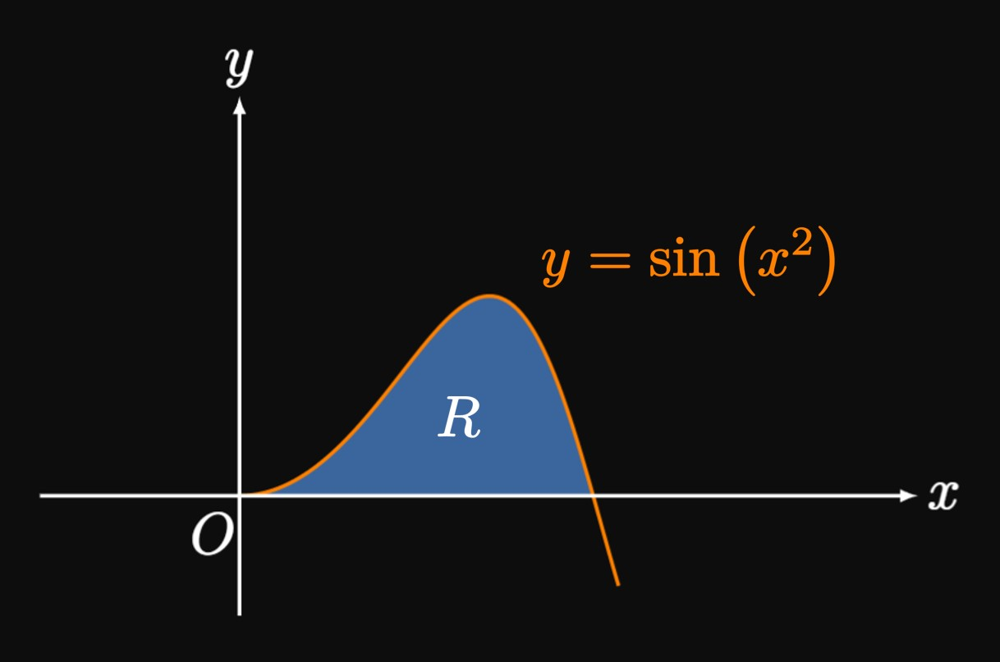

Fill in the blanks:
Using the Shell Method, when we rotate a region about a vertical line,
we consider ___ approximating rectangles and integrate with respect to \(x.\)
But when we rotate a region about a horizontal line and use the Shell Method,
we consider ___ approximating rectangles and integrate with respect to \(y.\)

Let \(R\) be the region bounded by \(y = \sin \par{x^2}\) and the \(x\)-axis
(Figure 8).
Write an integral expression that gives the volume
of the solid generated by rotating \(R\)
about the \(y\)-axis
about the \(x\)-axis
For each of exercises 3–16, use the Shell Method to find the volume of the solid
generated by rotating the bounded region about the specified line.
\(\ds y = \frac{2}{x^2 + 1} \cmaa y = 1 \cmaa x = 0 \scoll \abtAxis{y}\)
For each of exercises 17–20, use a graphing calculator to find the volume of the solid generated by rotating
the region about the specified line. Give your answer to three decimal places.